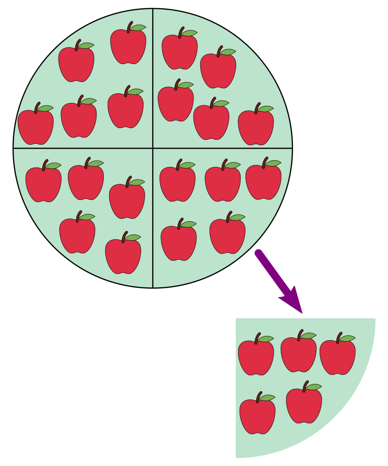

Division
Division is one of the four basic operations of arithmetic, the ways that numbers are combined to make new numbers. The other operations are addition, subtraction, and multiplication. At an elementary level the division of two natural numbers is, among other possible interpretations, the process of calculating the number of times one number is contained within another.[1]: 7 This number of times need not be an integer. For example, if 20 apples are divided evenly between 4 people, everyone receives 5 apples (see picture). The division with remainder or Euclidean division of two natural numbers provides an integer quotient, which is the number of times the second number is completely contained in the first number, and a remainder, which is the part of the first number that remains, when in the course of computing the quotient, no further full chunk of the size of the second number can be allocated. For example, if 21 apples are divided between 4 people, everyone receives 5 apples again, and 1 apple remains. For division to always yield one number rather than a quotient plus a remainder, the natural numbers must be extended to rational numbers or real numbers. In these enlarged number systems, division is the inverse operation to multiplication, that is a = c / b means a × b = c, as long as b is not zero. If b = 0, then this is a division by zero, which is not defined.[a][4]: 246 In the 21-apples example, everyone would receive 5 apple and a quarter of an apple, thus avoiding any leftover. Source
